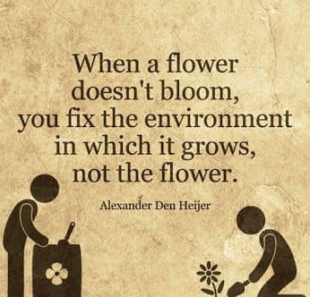
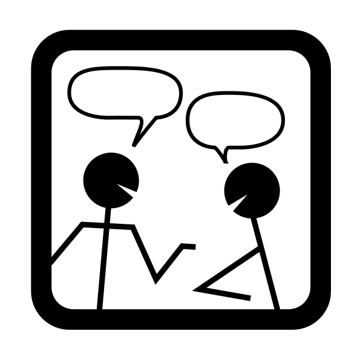
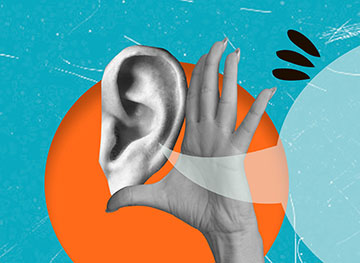
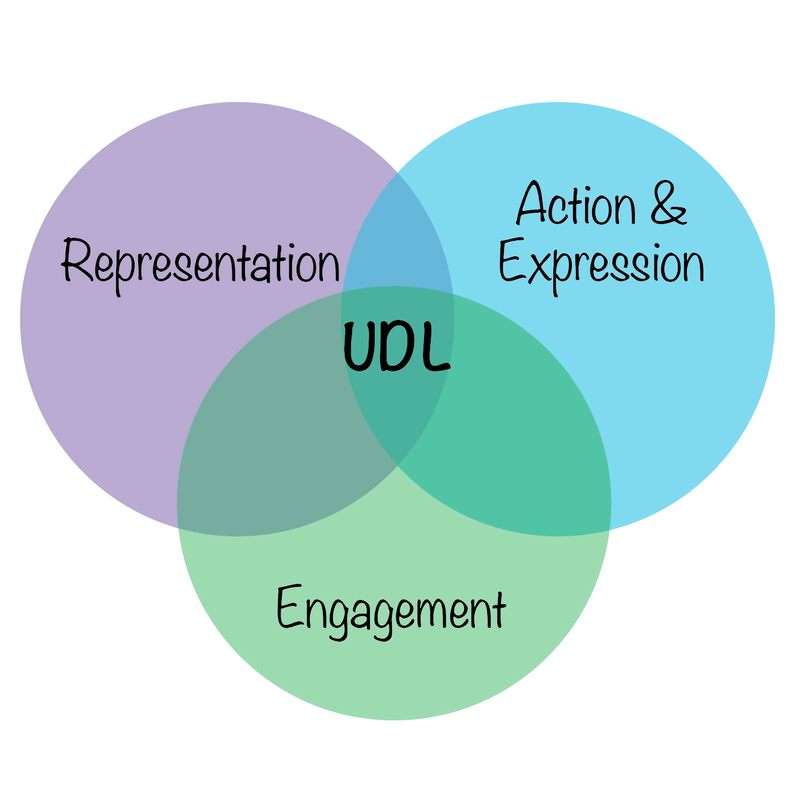

Creating a positive learning environment
31/08/2026
Licence

This current work by Sarah von Grebmer zu Wolfsthurn, Sara Lil Middleton and Malika Ihle is licensed under a CC-BY-SA 4.0 Creative Commons Attribution 4.0 International SA License. It permits unrestricted re-use, distribution, and reproduction in any medium, provided the original work is properly cited. If you remix, transform, or build upon the material, you must distribute your contributions under the same license as the original.
Contribution statement
Creator: Von Grebmer zu Wolfsthurn, Sarah ( 0000-0002-6413-3895)
0000-0002-6413-3895)
Reviewer: Middleton, Sara ( 0000-0001-5307-8029)
0000-0001-5307-8029)
Consultant: Ihle, Malika ( 0000-0002-3242-5981)
0000-0002-3242-5981)
Prerequisites - EDIT
Important
Before completing this session, please carefully read about the prerequisites.
| Prerequisite | Description | Link/Where to find it |
|---|---|---|
| Basic familiarity with Open Science practices | Examples: R, Quarto, Git, GitHub, preregistration, Open Access etc. | Click here to get familiar with Open Science first |
| Core didactic principles | A firm grasp on important didactic tools and elements | Download Link |
| Knowledge about designing teaching events | Tools and strategies to create a learning experience to convey content and skills | Download Link |
Questions from the previous session
What are your questions from the previous session?
Key terms and definitions
- Learning environment:
- Active listening:
- Growth mindset:
- Inclusive language:
Key terms and definitions
- Learning environment: Comprises “the psychological, cultural, and physical setting in which learning occurs and in which experiences and expectations are co-created among its participants” (Rusticus et al., 2023)
- Active listening: “The deliberate process of listening with attention and intention to understand another person’s message, while showing that understanding through responses such as clarification, reflection, and feedback.” (Carnegie Mellon University)
- Growth mindset: “The ability to reframe perceived failures as opportunities to learn and grow” (Dweck, 2006)
- Inclusive language: Language that acknowledges the diversity of people, avoids stereotypes, discrimination and assumptions and supports equal opportunities (United Nations)
Covered in this session
- What is a positive learning environment?
- Behaviors and attitudes towards your audience
- Fostering a growth mindset
- Establishing norms for interactions
- Universal Design for Learning (UDL)
- Inclusive language in your Open Research (OR) event
- Taking perspective and being a role model in your OR event
Learning objectives
At the end of this session, you will be able to:
- Describe the key features of a positive learning environment, including the roles of verbal strategies, body language, growth mindset, interaction norms, perspective-taking, role modelling and inclusive language
- Evaluate how your behavior, language, and attitude influence learner motivation and engagement
- Analyze challenges affecting the learning environment during an Open Research training event and evaluate strategies to address them in different teaching contexts
Before we start: Survey time!
ADD QR code
Before we start: Survey time!
What is your experience with actively creating a positive learning environment for your learners in Open Open Research events?
I have never organized an Open Research event, so this does not apply
I am not familiar with the concept of a positive learning environment yet
I am familiar with the concept of a positive learning environment, but have not actively taken any steps towards it yet
I am familiar with the concept of a positive learning environment and have actively taken steps towards it
Creating a positive learning environment for your learners is all I think about for my Open Research events
What is your level of familiarity with Universal Design for Learning (UDL)?
I have not heard of it yet
I have heard of it but have never actively engaged with it.
I have a basic understanding and use it sometimes in my teaching and learner interactions.
I am very familiar and use it extensively in my teaching and learner interactions.
Which of the following elements of creating a positive learning environment do you feel most confident about in your teaching?
Using verbal strategies
Using non-verbal strategies
Fostering a growth mindset
Establishing norms for interaction
Using inclusive language
None of the above
Discussion of survey results
What do we see in the results?
The “learning environment”
What does this mean to you?
Add QR code.
Take 5 minutes to collect some concepts and thoughts that come to mind with your neighbor.
The “learning environment”
“The learning environment comprises the psychological, social, cultural, and physical setting in which learning occurs and in which experiences and expectations are co-created among its participants.”
“[…] is the setting and conditions […] which influences learners engagement and success.”
See Rusticus et al. (2023). Adapted from https://www.oecd.org/en/topics/policy-issues/learning-environment.html.
Why the learning environment matters

- Influences motivation - Influences performance - Influences emotional well-being - All linked to long-term knowledge retention and increased job competencies
Rusticus et al. (2023)
Your turn! 5 minutes
Activity:
What is a positive learning environment?
Write a few bullet points on what this means to you. Save this as part of your developing teaching philosophy for future reference.
What you can do to create a positive learning environment?
Verbal strategies

- Small-talk (yes, it is important)
- Call learners by their name
- Validate and show appreciation
- Accept silences
- Practice active listening
Note
Consider potential language barriers or cultural differences in verbal communication, e.g., technical terms, high vs. low context cultures, feedback styles.
Chat dialogue icon: OpenClipart / FreeSVG.org — CC0 Public Domain.
The skill of active listening
““…listening with attention and intention to understand another person’s message, while showing that understanding through responses such as clarification, reflection, and feedback.”

- Paraphrase what audience members express
- Make explicit connections between statements
- Refrain from premature judgment
- Ask for clarification
- Listen fully before responding
Source: UC Berkely ExceEd Program
Body language
- Maintain eye contact with learners
- Use your body for communication (shake head, use hands)
Astronaut Samantha Cristoforetti. Milan, Italy. Photo by Pier Marco Tacca/Getty Images.
Note
Consider cultural differences in body language, e.g., perception of eye contact and body gestures.
Your turn: 7 minutes
Activity:
Practice your active listening skills and observe your body language while your peer is answering one of the questions below.
How did you first hear about Open Research practices or first become involved in them?
What does Open Research mean to you and your research work?
Do you already have an Open Research topic in mind you would like to teach about? What would it be and why?
Instructions: Groups of three, one learner, one instructor practicing the active listening, one observer. Learner gives answer to question to the instructor (approx. 2 mins). In the debriefing, discuss observations and experiences with verbal and non-verbal communication.
Attitudes towards your audience: methods
- Motivate audience to get involved as early as possible
- Have introductory activities
- Use different visualization methods to encourage different ways of participation (e.g., through speaking, chat, collaborative documents, whiteboards, anonymous questions…)
- Adapt to your audience: pace, examples, level of difficulty …
Note
Consider neurodiversity when designing engagement activities and visualizations: color choices, sensory processing, mental imagery…
© 2018 Cristina Simmons
Your turn! 6 minutes
Activity:
Collect introductory activities that you use in your teaching on Open Research or saw in other Open Research training you attended and describe what effect they had on you or the learners.
Instructions: Write down some thoughts for yourself for 2 minutes, then discuss with your neighbor for 2 minutes, then we will discuss in the big group for 2 minutes.
Fostering a growth mindset
Growth mindset = “the ability to reframe perceived failures as opportunities to learn and grow” (Dweck, 2006)
- Positive error framing
- Praise effort and improvement, not performance or ability
- Provide opportunities for self-assessment
- Present multiple possible approaches
- Help your learners set realistic expectations
Adapted from Laura Carter: https://zenodo.org/records/18905547
https://icons8.com/icons
Establish norms for interaction
Question: Which learning interactions will be common in your event/course? (e.g., large group discussions, work in pairs..)
- Based on this: establish rules for interaction
(or a Code of Conduct) - Examples:
- Take group work seriously
- Listen respectfully, do not interrupt
- Respect different perspectives and experiences with Open Research, critique ideas, not people
- Use inclusive language and try to avoid assumptions about others
- …
Universal design for learning
- Framework by CAST to improve and optimize teaching and learning for all people based on scientific insights in how humans learn
- Addresses diversity in learning in three categories:
- Engagement (the why of learning)
- Representation (the what of learning)
- Action & Expression (the how of learning)

Expression: Inclusive language
= language that acknowledges the diversity of people, avoids stereotypes, discrimination and assumptions and supports equal opportunities (United Nations)
So.. what about creating a positive learning environment in your Open Research event?
Language in your Open Research event
Use respectful and person-centered language
- “Everyone”, “all” etc. instead of “You guys”
Explain technical Open Research terms, do not assume prior knowledge
Use examples from different research fields, not just one domain
Provide multiple approaches for a problem
- “One approach is..” instead of “Of course you would do it this way!”
Avoid idioms, slang, or culture-specific jokes
- “Share your research output across different trusted platforms.” instead of “Don’t put all eggs into one basket!”
Phan et al. (2025)
Taking perspectives in your Open Research event
Do not assume. Recognize that learners come to Open Research from different:
- perspectives
- disciplines
- institutions
- resources
- access to (research) infrastructure
- …
Be a role model in your Open Research event
- Add anecdotes about your own experiences with Open Research tools: “To get this to work, I had to…”
- Show your learners your workflow, e.g., your GitHub repository or folder structure
- Share mistakes or uncertainties you encountered in your own workflow: “I got my R plot wrong at first because..”
Your turn! 10 minutes
Activity:
What do you think are potential challenges to a positive learning environment during an Open Research training event? How would you solve them?
(e.g., format, modality, level of experience, audience group size, asynchronous work, technical set-up..)
In pairs, write a few bullet points about this. Save this as part of your developing teaching philosophy for future reference.
Take-home messages
You can intentionally create a positive learning environment through (body) language, active listening, teaching methods and many more strategies
How you teach is as important as what you teach: Your actions and attitudes as an instructor have a direct impact on the learning process and success
Model the Open Science values you teach and demonstrate openness, transparency in your own work
Make mistakes and be open about them, too!
Take-home messages
Learning objectives - Recap
At the end of this session, you are now able to:
- Describe the key features of a positive learning environment, including the roles of verbal strategies, body language, growth mindset, interaction norms, perspective-taking, role modelling and inclusive language ✅
- Evaluate how your behavior, language, and attitude influence learner motivation and engagement ✅
- Analyze challenges affecting the learning environment during an Open Research training event and evaluate strategies to address them in different teaching contexts ✅
To conclude: Survey time!
ADD QR code
To conclude: Survey time!
On a scale from 1 to 5, what is your level of confidence with actively creating a positive learning environment for your learners in Open Research events? (1 = not confident at all, 5 = extremely confident, let’s go)
1
2
3
4
5
Which of the following elements of creating a positive learning environment do you feel most confident about in your teaching at this point?
Using verbal strategies
Using non-verbal strategies
Fostering a growth mindset
Establishing norms for interaction
Using inclusive language
None of the above
Discussion of survey results
What do we see in the results?
References
Additional references
Antosch-Bardohn, J. (2018): Nicht-intentionale Lernprozesse im Alltag von Studierenden. Logos Verlag.
Antosch-Bardohn, J., Beege, B., & Primus, N. (2019). In die Lehre starten. UTB GmbH.
Antosch-Bardohn, J. (2019): “Für mein Thema brennen die Studis” - Lernmotivation in der Hochschullehre. In: Neues Handbuch Hochschullehre. Nummer 89, S. 1-18.
Hofmann, E. & Löhle, M. (2004). Erfolgreich lernen. Hogrefe Verlag.
Kergel, D. & Heidkamp-Kergel, B. (2020). E-Learning, EDidaktik und digitales Lernen. Springer VS.
Additional resources
Active listening: - https://www.ncbi.nlm.nih.gov/books/NBK442015/
Thanks!
Slide deck 4 from here: ACTIVATION METHODS
Interactive teaching methods
transition to activation method
Your turn!
Take 20 minutes in pairs to practise an activation method of your choice in the context of a topic of your choice. Each pair demonstrates the activity in “class”, with the rest acting as audience.
TODO Sarah
LMU Open Science Center